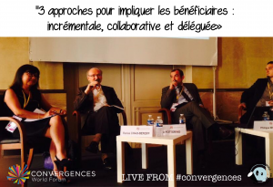

Discover the Best Of Video of the 2014 Convergences World Forum
Read all the reports of the 7th Convergences World Forum:
 Ownership of the new development goals |
 Big data and territories |
 The future of development funding |
|
|
 Involving beneficiaries |
|
 média evening |
|
 Microfinance and poverty |
|
 Impact investing |
|
 Climate change |
|
 Civil engagement in the solidarity sector |
|
 Convergences Awards Ceremoy |
 Closing session |
 Impact evaluation |
 Accontability and transparency |
 Sustainable development and competitiveness |
 Governance models |
 A new narrative for development |
|
 Digital rights |
|
 Digital technologies for development organisations |
|
 Fair and sustainable supply chains |
|
 Voice and action of civil society |
|